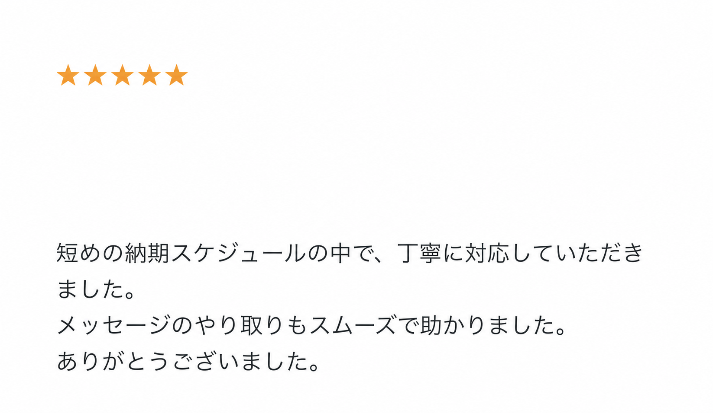
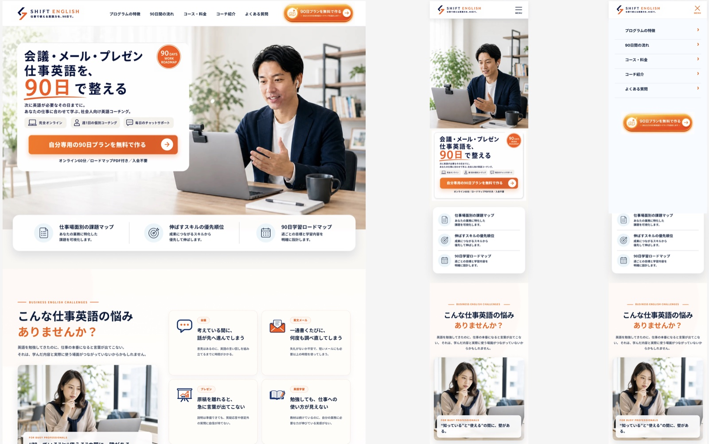
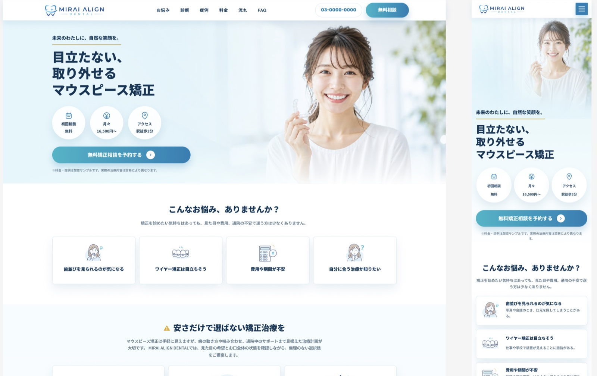

私について
Webサイト・LP制作を中心に、構成設計から公開前チェックまで対応しています。
見た目を整えるだけでなく、初めて訪れたユーザーが内容を理解し、 問い合わせ・予約・資料請求などの行動まで進みやすい構成を意識して制作しています。
Figmaカンプからのコーディングにも対応し、スマホ表示・余白・ボタンの押しやすさ・ 読みやすさまで確認しながら丁寧に仕上げます。
強み
- ユーザーが迷わず行動できる構成・情報整理
- 業種や目的に合わせた構成・トーン・問い合わせ導線の設計
- PC / スマホの見え方まで確認する丁寧なコーディング
制作実績
有料Web制作：Figmaカンプからのコーディング1件（評価5.0） /
公開作品：現時点の品質基準で厳選した自主制作6件
- HTML / CSS
- JavaScript
- レスポンシブ対応
- Figma
- LP・Webサイト
電話やオンライン会議は原則使用せず、文章で確認を残しながらチャットで進めます。
掲載内容が固まっていない段階でもご相談ください。
有料制作でいただいた評価
FigmaカンプからのLP・Webサイトコーディング案件で、
納期対応とチャットでの進行を評価していただきました。

匿名加工済みの評価画像を見る ↗※購入者のアイコン・ID・掲載時期・サービス価格は、プライバシーに配慮して非表示にしています。
対応できること
LP・ホームページ制作に必要な流れをまとめて対応します。
見た目だけで終わらせず、訪問者が内容を理解し、
次の行動へ進みやすい状態を目指します。
構成設計
ターゲット・目的・必要な情報を整理し、問い合わせや予約まで迷わず進める流れを作ります。
- 掲載内容の整理
- セクション構成の提案
- 問い合わせまでの導線設計
デザイン制作
業種やサービスの印象に合わせて、信頼感・清潔感・世界観が伝わるデザインを制作します。
- ファーストビュー設計
- 配色・余白・写真の調整
- スマホでの読みやすさ確認
コーディング
HTML / CSS / JavaScriptで実装し、PC・スマホの両方で見やすいレスポンシブ表示に対応します。
- セマンティックHTML
- レスポンシブCSS
- 目的に応じたJavaScript実装
スマホ対応・確認
PC・スマホの見え方やリンク、余白を確認し、公開前まで丁寧に調整します。
- 表示崩れの確認
- リンク・ボタンの確認
- 画像説明・余白の確認
自主制作｜Webサイト3件
実案件を想定し、構成・デザイン・実装・スマホ対応
まで制作しました。
すべて架空の事業者を想定した自主制作であり、
実在の案件ではありません。


自主制作｜LP3件
問い合わせや予約までの導線を意識した、
架空サービスの自主制作LPです。

Figmaデザインカンプ
PC・スマホのレイアウトに加え、FAQの開閉やメニューなど、
実装に必要なUIの状態まで確認できるよう整理しています。

Figmaで見る ↗ 英語コーチングLP SHIFT ENGLISH PC / SP、FAQ全開、スマホメニューの開状態まで収録 実際のFigmaファイルはこちらから
Figmaで見る ↗ マウスピース矯正LP MIRAI ALIGN DENTAL PC / SP、FAQ全開、スマホメニュー・固定CTAの状態まで収録 実際のFigmaファイルはこちらから
制作効率向上のため、必要に応じてHTML to Figmaを補助的に活用しています。
取り込み後のレスポンシブ設計・UI状態・コンポーネント整理はFigma上で調整しています。
ご覧いただいたサービスから
ご相談ください
このポートフォリオを開いた募集ページ・サービスのメッセージから、現在の状況とご希望をお送りください。
相談から納品までチャットで進められます。
制作の進め方
初めてWeb制作を依頼する方でも流れが分かりやすいように、確認のタイミングを挟みながら進めます。
ヒアリング
目的・ターゲット・掲載内容・参考サイトを確認し、必要な情報と優先順位を整理します。
構成・デザイン
ファーストビューや問い合わせボタンの位置を含め、ユーザー導線と業種らしさを意識してデザインします。
実装・スマホ対応
デザインに沿ってコーディングし、PC・スマホの両方で読みやすく操作しやすい状態へ調整します。
確認・納品
表示崩れ・リンク・画像・文章の見え方を確認し、修正対応後に納品いたします。
安心してご依頼いただくために
制作前に目的・掲載内容・必要な導線を整理し、制作中も確認のタイミングを設けながら進めます。
文章や構成が固まっていない場合も、必要な情報を一緒に整理してご提案します。
お問い合わせ
制作のご相談・お問い合わせ
Webサイト・LP制作のご相談・お見積もりは、
このポートフォリオをご覧いただいたサービスの
メッセージからお送りください。
ご連絡方法
ご利用中の募集ページ・サービスへ戻り、KOTA宛てに「制作内容・ご希望の納期・参考サイト」をメッセージでお送りください。
電話・オンライン会議は原則不要です。
相談から納品までチャットで完結します。